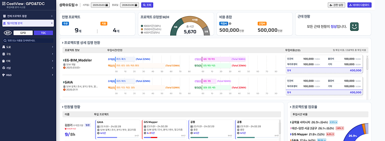
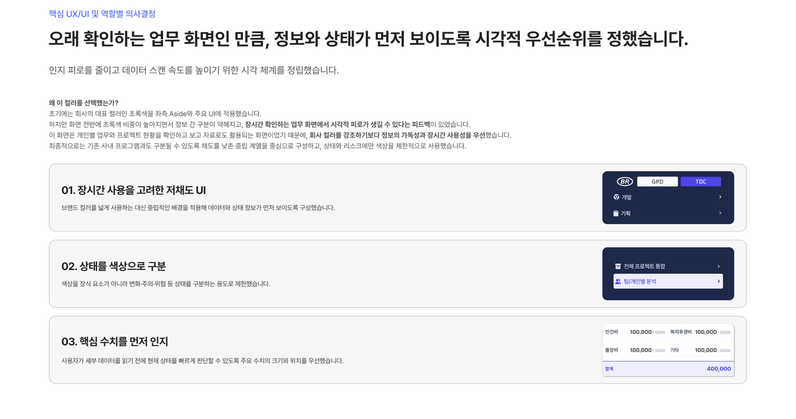
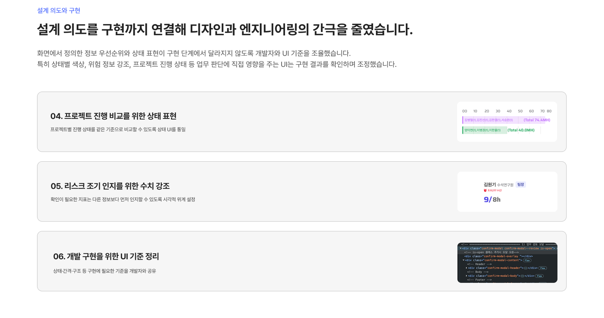
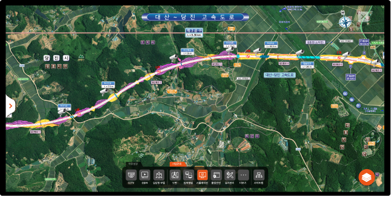
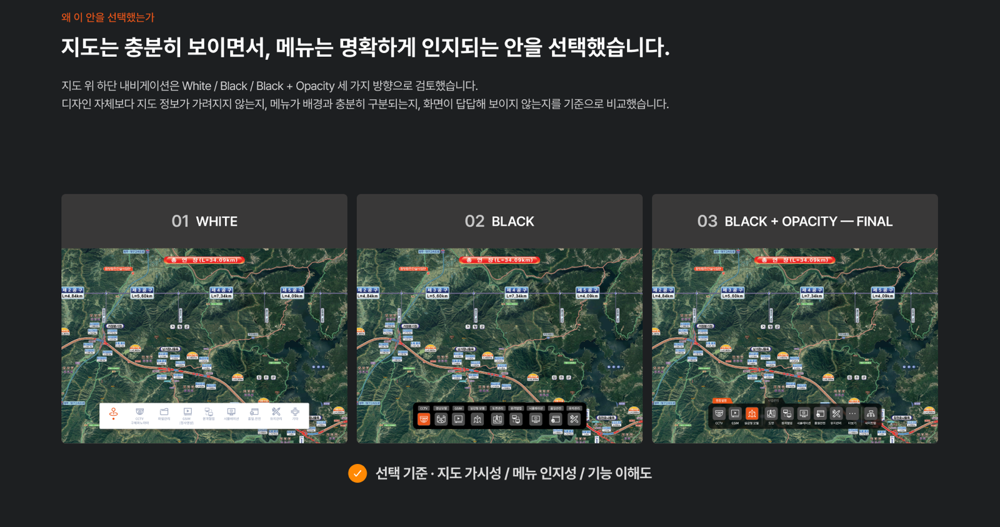
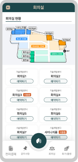
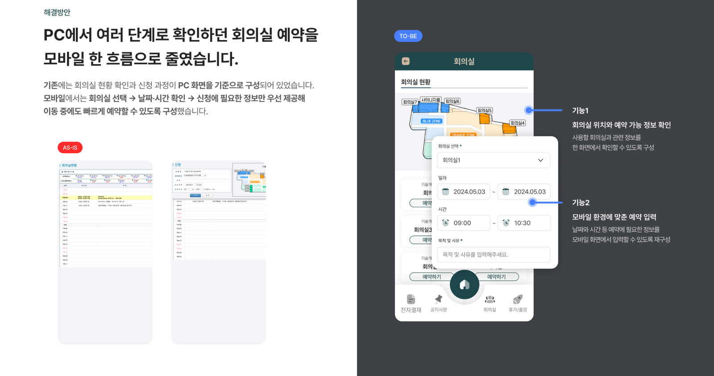
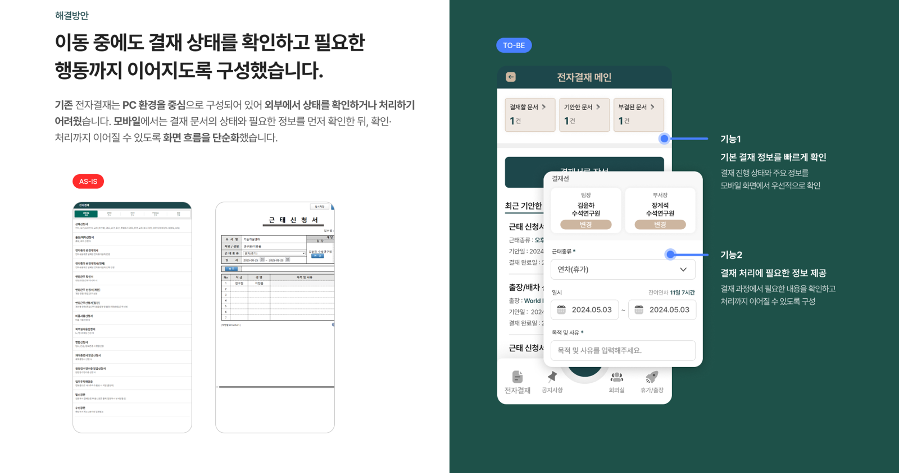
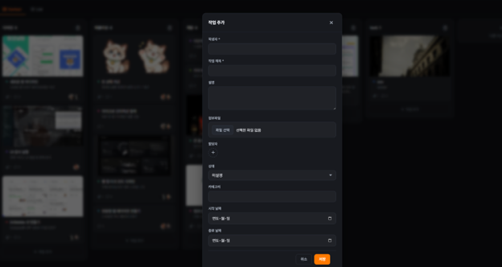

복잡한 업무를,
명확한 다음 행동으로.
정보 구조부터 UI와 퍼블리싱까지 연결하는
프로덕트 디자이너 이한울입니다.
PRODUCT DESIGNER · B2B / DATA / WORKFLOW
PORTFOLIO · 2026.10.05
복잡한 업무를,
명확한 다음 행동으로.
정보 구조부터 UI와 퍼블리싱까지 연결하는
프로덕트 디자이너 이한울입니다.
PRODUCT DESIGNER · B2B / DATA / WORKFLOW
PORTFOLIO · 2026.10.05
업무를 이해하는 디자이너.
구현을 이해하는 동료.
웹디자인과 퍼블리싱으로 시작해 B2B 제품의 정보 구조와 업무 흐름으로 설계 범위를 넓혔습니다. 사용자 역할과 확인 목적을 정리하고, 필요한 정보와 다음 행동이 연결되도록 UI를 설계합니다.
CAREER
2022.12–현재 · 삼안 기술개발센터
Product Designer / UX·UI
B2B 플랫폼·ERP·모바일 업무 서비스의 정보 구조와 UX/UI 설계
공통 UI 기준 정리와 HTML·CSS·SCSS 퍼블리싱
2020.09–2022.12 · 핸섬피쉬
Web Designer
기업·브랜드·서비스 웹사이트의 UI와 반응형 화면 설계
콘텐츠 구조 정리와 퍼블리싱 참여
HOW I CONTRIBUTE
정보 구조 — ERP에서 역할별로 필요한 데이터와 조회 범위를 정리했습니다.
업무 흐름 — 모바일에서 전자결재와 회의실 예약을 이어가도록 설계했습니다.
구현 연결 — ERP에서 개발자와 상태 표현·간격·UI 구조를 조율했습니다.
TOOLS & METHODS
IA · User Flow · UI Design · Figma · Design System · HTML / CSS / SCSS
EDUCATION
2024.07–2026.02 · 국가평생교육진흥원 시각디자인학과 졸업
2020.03–2022.02 · 방송통신대학교 미디어영상학과 졸업
010 9271 8997
hanul.designer@gmail.com
서로 다른 문제, 세 가지 설계.
01 · ERP 분석 대시보드 / 04–10
역할별로 필요한 비용·인원 정보를 조회하고 비교하는 구조
02 · 통합 관리 플랫폼 / 11–17
분산된 현장 자료를 공통 메뉴와 지도 탐색으로 연결하는 구조
03 · 모바일 업무 포털 / 18–22
전자결재와 회의실 예약을 모바일에서 이어가는 흐름
04 · 칸반보드 개인 프로토타입 / 23–27
이미지 카드와 작업 단계별 컬럼, AI를 활용한 인터랙션 구현
05 · TBM 현장 기록 / 28
06 · 반응형 웹 리뉴얼 / 29
07 · PSC 거더 관리 플랫폼 / 30
08 · 한맥 디자인 시스템 / 31
09 · SkyAutoNet 웹 리디자인 / 32
10 · 반려동물 건강관리 / 33
연락처 / 34
PROJECT 01 · ERP / DATA UX
숫자를 모으는 화면에서,
필요한 현황을 비교하는 화면으로.
프로젝트 비용·인원 ERP 분석 대시보드
분산된 비용·인원 정보를 역할별 업무 목적에 맞게 정리했습니다. 전사 현황, 프로젝트별 정보, 개인별 정보를 구분하고 주요 수치와 상태를 확인하는 대시보드 UI를 설계했습니다.
기간 · 2025.12–2026.03
담당 · 역할별 정보 구조 · UX/UI 디자인 · 퍼블리싱
협업 · 개발자와 UI 기준 조율
환경 · 데스크톱 업무 화면

데이터는 쌓였지만,
필요한 현황을 한 번에 비교하기 어려웠습니다.
프로젝트별 데이터를 따로 확인하고 다시 정리해야 했습니다. 데이터를 더 보여주는 것보다, 누가 어떤 정보를 함께 확인해야 하는지 정리하는 일이 먼저였습니다.
수동 취합
여러 데이터를 다시 모아 현재 상태를 파악해야 했습니다.
→ 역할별로 필요한 정보를 한 화면에 배치했습니다.
비교 기준 부족
수치를 개별적으로 확인해 상태를 구분해야 했습니다.
→ 주요 수치와 확인이 필요한 상태의 위계를 정리했습니다.
반복 확인
같은 데이터를 다시 찾고 비교하는 과정이 이어졌습니다.
→ 함께 확인할 정보를 조회·비교 흐름으로 연결했습니다.
같은 데이터라도,
역할에 따라 먼저 확인할 정보가 달랐습니다.
전사 관점
전체 프로젝트의 비용·투입 공수와 현황을 비교합니다.
프로젝트 관점
담당 프로젝트의 현재 상태와 관련 정보를 확인합니다.
개인 관점
본인과 관련된 업무·실적 정보를 확인합니다.
역할과 데이터 범위를 기준으로 필요한 정보를 우선 노출하도록 설계했습니다. 화면에는 기간·프로젝트 조회 범위와 주요 수치, 프로젝트·인원별 현황을 연결했습니다.
대표색보다 정보의 구분과
장시간 확인하는 사용 환경을 우선했습니다.
초기에는 회사의 초록색을 사이드 메뉴와 주요 UI에 적용했습니다. 화면 전반에 초록색 비중이 높아지면서 정보 구분이 약해지고 시각적 피로가 생길 수 있다는 피드백이 있었습니다.
이에 낮은 채도의 중립색을 중심으로 구성하고, 상태와 주요 정보를 구분하는 영역에 색을 사용하도록 조정했습니다.
01 · 화면 바탕과 강조 영역을 구분
02 · 상태 표현과 선택된 메뉴의 위계를 정리
03 · 주요 수치의 크기와 위치를 우선 배치
선택 기준 · 정보 구분 / 장시간 사용 / 주요 수치의 위계

설계한 정보 위계가 구현에서도 유지되도록
개발자와 UI 기준을 조율했습니다.
UX/UI 설계와 퍼블리싱을 담당하며 상태 표현, 주요 수치 강조, 간격과 화면 구조를 정리했습니다. 개발자와 구현 결과를 확인하며 업무 판단에 영향을 주는 UI를 조정했습니다.
상태 표현
프로젝트와 인원별 현황을 비교할 수 있도록 표시 기준을 정리했습니다.
주요 수치
확인이 필요한 정보를 먼저 읽을 수 있도록 크기·위치·강조를 조정했습니다.
구현 기준
상태·간격·구조 등 화면 구현에 필요한 기준을 공유했습니다.

따로 확인하던 비용·인원 정보를
조회 범위와 함께 비교하도록 구성했습니다.
기존 업무 자료
데이터를 개별적으로 확인하고 취합
관련 수치를 다시 찾아 비교
보고에 필요한 자료를 별도로 구성
설계한 대시보드
기간·프로젝트 범위를 선택해 현황 조회
프로젝트별 비용·투입 공수를 함께 확인
주요 수치와 인원별 상태를 한 화면에 배치
이 비교는 정보 구조와 화면의 변화를 설명합니다. 업무 시간·오류 감소를 측정한 운영 성과는 포함하지 않았습니다.
정보를 보여주기 전에,
사용자가 무엇을 확인해야 하는지 정리했습니다.
담당한 작업
역할별 정보 범위, 대시보드 UI, 상태 표현과 퍼블리싱을 연결했습니다. 개발자와 UI 기준을 조율하며 설계 의도를 구현에 반영했습니다.
배운 점
같은 데이터라도 역할에 따라 필요한 정보와 우선순위가 달랐습니다. 화면의 정보 위계를 정하는 일과 구현 기준을 구체적으로 전달하는 일이 함께 필요했습니다.
후속 확인
실제 업무에서 필요한 현황을 찾는 시간, 확인이 필요한 상태를 구분하는 과정, 상세 정보로 이어지는 행동을 확인할 필요가 있습니다.
결과 범위 · 정보 구조·UI·퍼블리싱 / 운영 효과의 정량 검증 제외
PROJECT 02 · B2B PLATFORM / INFORMATION ARCHITECTURE
흩어진 현장 정보를,
하나의 탐색 흐름으로.
대규모 통합 관리 플랫폼
파일과 프로그램에 나뉜 공정·자원·보상·현장 자료를 공통 메뉴와 지도 탐색으로 연결했습니다. 서로 다른 사용자의 확인 목적을 정리하고, 관련 정보를 이어서 살펴볼 수 있도록 IA와 UX/UI를 설계했습니다.
기간 · 2023.01–2023.12
담당 · 사용자별 정보 요구 정리 · IA · UX/UI · 퍼블리싱 · 기획 참여
협업 · 기획 · 개발 · 연구 · 현장 실무자
활용 · 프로젝트 시연 · 내부 커뮤니케이션

자료는 여러 곳에 흩어져 있었고,
같은 플랫폼에서도 확인 목적은 달랐습니다.
공정·자원·보상·현장 정보를 확인하려면 자료 위치를 기억하고 파일이나 프로그램을 반복해서 열어야 했습니다. 관련 자료를 모으는 것과 함께 사용자가 어떤 정보를 이어서 확인하는지 정리했습니다.
현장 관리자
현장 진행 상태와 위치에 연결된 정보를 확인
본사 담당자
프로젝트 전반의 공정·자원·보상 등 관리 정보를 확인
외부 이해관계자
필요한 현황과 결과·시각화 자료를 확인
사용자별 목적을 고려하되, 공통 메뉴 안에서 필요한 정보를 찾도록 구성했습니다.
자료의 저장 위치 대신,
업무에서 함께 확인할 정보를 기준으로 묶었습니다.
자료 통합
파일·문서·프로그램별 자료를 하나의 플랫폼에서 찾도록 정리했습니다.
관련 정보 연결
함께 확인하는 자료를 가까운 위치에 배치해 한 흐름으로 이어지도록 구성했습니다.
공통 메뉴
공정·자원·보상·지도 등의 정보를 업무 단위로 분류했습니다.
위치 선택 → 관련 공정 확인 → 현장 영상·3D 정보 확인
위 흐름은 설계한 정보 연결을 요약한 것입니다. 측정된 클릭 수나 과업 시간의 결과는 아닙니다.
위치를 확인한 뒤,
같은 맥락에서 관련 정보를 살펴보도록 설계했습니다.
현장 위치와 관련 자료를 별도로 찾지 않도록 지도 화면을 탐색의 중심에 두었습니다. 공정·영상·3D 정보로 이동하면서 현재 보고 있는 위치와 관련 내용을 연결합니다.
01 · 현재 위치와 상태 확인
02 · 해당 위치의 주요 정보 확인
03 · 필요한 상세 화면으로 이동
모든 정보를 같은 비중으로 나열하기보다, 현재 상태에서 상세 정보로 확인 범위를 좁히도록 정리했습니다.

지도 가시성과 메뉴 인지성을 기준으로
하단 내비게이션을 비교했습니다.
지도 위 하단 메뉴를 White, Black, Black + Opacity 세 방향으로 검토했습니다. 지도 정보가 가려지는 정도, 메뉴와 배경의 구분, 화면의 답답함을 기준으로 비교했습니다.
WHITE
밝은 배경의 메뉴 영역
BLACK
어두운 불투명 배경의 메뉴 영역
BLACK + OPACITY · 선택안
지도 맥락을 남기면서 메뉴 영역을 구분하는 반투명 배경
선택 기준 · 지도 가시성 / 메뉴 구분 / 기능 인지
서로 다른 요구사항을
하나의 정보 구조와 UI 기준으로 정리했습니다.
사용자별 정보 요구를 정리하고 IA·UX/UI 설계와 퍼블리싱에 참여했습니다. 기획·개발·연구·현장 실무자의 요구사항을 정리하며, 공통 메뉴 안에서 필요한 정보가 연결되도록 정보 범위와 UI 기준을 조율했습니다.
정보 범위
사용자가 확인할 현황·자료·상세 정보를 구분했습니다.
화면 구조
지도와 관련 자료를 이어서 확인하는 흐름을 설계했습니다.
UI 기준
지도 가시성과 메뉴 구분을 함께 고려해 내비게이션을 정리했습니다.
분산된 자료를 연결한 설계는
프로젝트 시연과 내부 커뮤니케이션에 활용했습니다.
설계 결과
공통 메뉴와 지도에서 현장 자료를 이어서 확인하는 구조를 구성했습니다.
확인 가능한 활용
설계한 화면을 프로젝트 시연과 내부 커뮤니케이션에 활용했습니다.
배운 점과 후속 확인
정보를 모으는 것만큼 현재 위치·주요 정보·상세의 순서를 정리하는 일이 중요했습니다. 후속 검증에서는 사용자별로 같은 탐색 과업을 정하고 클릭 수와 완료 시간을 확인할 필요가 있습니다.
결과 범위 · IA·UI·퍼블리싱·시연 활용 / 정량 탐색 성과 제외
PROJECT 03 · MOBILE / WORKFLOW UX
작게 보는 PC에서,
업무를 이어가는 모바일로.
전자결재·회의실 예약 모바일 업무 포털
PC 중심으로 구성된 전자결재와 회의실 예약을 모바일 환경에 맞게 재설계했습니다. 이동 중 확인할 정보와 필요한 입력을 정리해 업무를 이어갈 수 있는 화면 흐름을 구성했습니다.
기간 · 2023.01–2023.06
담당 · 모바일 업무 흐름 · 정보 우선순위 · UX/UI 설계
사용자 · 사내 임직원 · 결재 담당자

모바일에서 보이는 것과
필요한 업무를 이어가는 것은 달랐습니다.
이동 중 전자결재
PC 중심 화면에서는 문서 상태를 확인하고 처리하는 흐름이 모바일에 맞지 않았습니다.
회의실 확인과 예약
회의실 현황과 날짜·시간을 확인한 뒤 신청하는 과정이 PC 화면을 기준으로 구성돼 있었습니다.
이에 전자결재와 회의실 예약을 모바일 설계의 중심에 두었습니다. 작은 화면에서 상태·일정·입력 정보를 구분하고 필요한 행동으로 이어지도록 정리했습니다.
회의실 현황 확인에서
날짜·시간 입력으로 이어지는 흐름을 구성했습니다.
기존 구조
PC 화면을 기준으로 회의실 현황을 확인하고 신청 정보를 입력했습니다.
모바일 설계
회의실 위치·예약 현황을 먼저 확인한 뒤, 입력 화면에서 회의실·날짜·시간·목적을 지정하도록 구성했습니다.
내가 정리한 기준
예약에 필요한 정보를 찾는 순서와 입력하는 순서를 연결하는 데 집중했습니다.
위치·예약 현황 확인 → 회의실·날짜·시간 입력 → 예약 신청

문서의 상태를 먼저 확인하고,
필요한 입력으로 이어지도록 정리했습니다.
상태별 문서 구분
결재할 문서, 기안한 문서, 부결된 문서를 구분해 확인하도록 구성했습니다.
필요한 입력 연결
결재선과 근태 종류, 일시 등 문서 작성에 필요한 항목을 모바일 화면에 배치했습니다.
내가 담당한 설계
모바일에서 먼저 확인할 정보와 입력 순서를 정리하고 화면 흐름을 구성했습니다.

모바일 전환의 기준을
화면 크기에서 업무 흐름으로 바꿨습니다.
담당한 작업
전자결재와 회의실 예약의 모바일 UI를 설계하고, 상태 확인에서 입력으로 이어지는 정보 우선순위를 정리했습니다.
배운 점
PC의 내용을 모두 담는 것보다 이동 중 필요한 정보와 행동을 먼저 연결하는 일이 중요했습니다.
후속 확인
예약·결재 과업의 완료 시간, 날짜·시간 오입력, 중간 이탈을 확인할 필요가 있습니다.
결과 범위 · 모바일 UI·업무 흐름 설계 / 이용률·만족도 성과 제외
PROJECT 04 · PERSONAL PROTOTYPE / INTERACTION
텍스트 중심 목록에서,
작업 단계가 보이는 보드로.
칸반보드 업무관리 프로토타입
실무에서 관찰한 업무관리 문제를 개인 프로젝트로 재구성했습니다. 이미지와 핵심 텍스트를 카드에 배치하고, 작업 단계별 컬럼과 카드 이동을 설계했습니다.
시작 · 2026.03
담당 · 문제 정의 · UX/UI · 인터랙션 설계
구현 · AI를 활용한 프로토타이핑
범위 · 보드 · 카드 이동 · 작업 상세 입력

업무 제목을 읽는 것만으로는
프로젝트와 작업 단계를 함께 구분하기 어려웠습니다.
프로젝트 식별
여러 업무를 텍스트 제목만으로 구분해야 했습니다.
→ 프로젝트 이미지와 핵심 텍스트를 함께 배치했습니다.
작업 단계 확인
현재 업무가 어느 단계에 있는지 함께 살펴볼 구조가 필요했습니다.
→ 디자인·퍼블리싱·개발·QA 등의 컬럼으로 구분했습니다.
상세 정보 연결
카드에서 담당자와 댓글·첨부 표시를 확인하고 상세 입력으로 이동하도록 구성했습니다.
선택 기준 · 프로젝트 식별 / 작업 단계 구분 / 상세 정보 연결
작업을 구분하는 보드에서
상세 입력으로 이어집니다.
보드
이미지·제목·핵심 설명을 카드에 배치했습니다. 컬럼으로 작업 단계를 구분하고 카드 이동으로 단계를 변경하도록 구성했습니다.
작업 상세 입력
작업 제목과 설명, 첨부·담당자 등 필요한 정보를 입력하도록 구성했습니다.
두 화면은 같은 프로토타입의 보드와 입력 화면입니다.

설계한 흐름을
AI를 활용한 프로토타입으로 연결했습니다.
설계·구현 범위
카드와 컬럼으로 업무를 구분하는 보드
드래그앤드롭을 통한 카드 이동
작업 상세 모달과 담당자·댓글·첨부 기능
내 역할
문제를 재구성하고 정보 위계·화면·인터랙션을 설계했습니다. 구현 과정에서는 AI의 도움을 활용했습니다.
결과의 범위
핵심 화면과 인터랙션을 구현한 개인 프로토타입입니다. 실제 조직에서 장기간 운영한 업무관리 서비스의 성과는 포함하지 않습니다.
작동하는 인터랙션과
업무에 도움이 되는 경험은 따로 확인해야 합니다.
설계에서 다룬 것
프로젝트 식별을 위한 이미지 카드와 작업 단계별 컬럼을 구성하고, 카드 이동·상세 입력으로 연결했습니다.
후속 검증 계획
같은 업무 찾기 과업에서 탐색 시간과 오선택을 확인합니다.
도움 없이 작업을 찾고 변경할 수 있는지 살펴봅니다.
업무 수가 많아졌을 때 보드 탐색과 검색·필터의 필요성을 확인합니다.
결과 범위 · 개인 프로토타입 / 사용성 테스트 수치 제외
PROJECT 05 · TBM Safety Record System
현장 기록의 모바일 전환 UX
종이 기록을 현장 작성·검색 흐름으로 전환
기간 · 2025.11 시작
담당 · 기록 흐름 · 모바일 UI 설계
문제
종이 서류에서 디지털로, 현장에서 체감하는 안전관리로.
설계
수기 기록과 분리된 사진 저장, 제출 현황 확인의 어려움을 바탕으로 모바일 기록 흐름을 정리했습니다. 작성·사진 첨부·제출과 과거 기록 조회를 연결하는 데 집중했습니다.
결과 범위
현장 기록의 작성·사진 첨부·제출·조회 흐름을 설계했습니다. 업무 시간 감소와 사용성 개선 수치는 포함하지 않았습니다.

PROJECT 06 · 5G Testing Solutions Website
반응형 웹 전면 리뉴얼
디바이스별로 일관된 제품 탐색 구조 설계
기간 · 2023.03 — 2023.11
담당 · 제품 탐색 구조 · 반응형 화면 · UI 규칙 설계
문제
글로벌 방문자는 늘었지만, 디바이스가 바뀌면 탐색 경험도 함께 끊기고 있었습니다.
설계
PC 중심의 고정형 웹은 모바일에서 정보가 잘리거나 우선순위가 흐려졌습니다. 솔루션과 제품 정보를 사용자의 탐색 목적에 맞게 재구성하고, 같은 정보 구조가 모든 화면에서 자연스럽게 이어지도록 반응형 규칙을 만들었습니다.
결과 범위
제품·솔루션 탐색과 반응형 UI의 설계 결과입니다. 이탈률이나 문의 전환의 변화는 측정 성과로 제시하지 않습니다.

PROJECT 07 · PSC Girder Measurement & Management Platform
PSC 거더 관리 플랫폼
현장 측정과 사무실 관리를 웹·앱으로 연결
기간 · 2023.09 — 2024.08
담당 · 현장 측정 흐름 · 웹·앱 UI · 퍼블리싱
문제
수기로 옮기던 측정값을 수집 과정과 연결해 확인할 관리 화면이 필요했습니다.
설계
센서 연결, 측정값 확인, 거더별 분석 화면을 정리했습니다. 자동 수집·분석 기능을 사용하는 사람이 측정 상태와 결과를 확인하도록 웹과 모바일 UI를 설계했습니다.
결과 범위
거더 측정·분석 과정의 정보 구조와 웹·앱 UI·퍼블리싱 결과입니다. 안전성·정확도·운영 효율의 전후 측정 결과는 포함하지 않았습니다.

PROJECT 08 · Hanmac Design System
공통 UI 기준을 정리한 디자인 시스템
브랜드·컴포넌트·사용 가이드를 하나의 기준으로 통합
기간 · 2024.05 — 진행중
담당 · 파운데이션 · 컴포넌트 · 사용 가이드 설계
문제
반복되는 UI 변경과 프로젝트별로 달라지는 규칙이 디자인과 개발 양쪽의 재작업을 만들고 있었습니다.
설계
브랜드, 파운데이션, 컴포넌트를 하나의 웹 플랫폼으로 정리하고 사용 기준과 예외를 문서화했습니다. 팀이 같은 언어와 규칙으로 설계하고 구현할 수 있는 지속 가능한 기반을 만드는 데 집중했습니다.
결과 범위
브랜드·파운데이션·컴포넌트와 웹 가이드의 설계 결과입니다. 재작업 감소나 팀 작업 속도의 개선 폭은 측정 성과로 제시하지 않습니다.

PROJECT 09 · SkyAutoNet Website Renewal
자율주행 기술을 이해시키는 반응형 웹 리디자인
기술 적용 장면과 목적별 탐색 구조 연결
기간 · 2023.03 — 2023.11
담당 · IA · 브랜드 메시지 · UI 설계 · 퍼블리싱 참여
문제
기술력은 있었지만 기존 웹사이트에서는 핵심 사업과 브랜드 신뢰가 충분히 전달되지 않았습니다.
설계
첫 화면에 사업 분야와 기술 적용 장면을 제시하고, 목적 중심 메뉴와 명확한 정보 위계를 적용했습니다. 데스크톱과 모바일에서 같은 메시지와 CTA가 이어지도록 반응형 경험을 설계했습니다.
결과 범위
핵심 사업 메시지·정보 위계·반응형 화면의 설계 결과입니다. 신뢰도·이탈률·조회수 변화는 측정 성과로 제시하지 않습니다.

PROJECT 10 · Dangnyangsilrok · Personal Product Project
기록과 일정을 연결하는 반려동물 건강관리 UX
기록 입력과 피드백을 반복 가능한 흐름으로 설계
기간 · 2026.02 — 진행중
담당 · 건강 기록 흐름 · 브랜드 · 모바일 UI 설계
문제
기록은 중요하지만 사용자에게는 번거로운 일입니다.
설계
오늘의 기록과 일정을 홈에 배치하고 빠른 기록으로 이어지는 흐름을 설계했습니다. 캐릭터·문체·색상을 기록 화면에 연결했습니다.
결과 범위
반려동물 기록·일정·리포트의 개인 UI 설계 사례입니다. 반복 사용과 습관 형성 효과는 검증 결과로 제시하지 않습니다.

복잡한 업무를 함께 풀어갈
팀을 만나고 싶습니다.
사용자 역할과 업무 흐름을 정리하고,
정보 구조부터 UI와 구현까지 연결하겠습니다.
이한울 · Product Designer
B2B · 데이터 UX · 업무 플랫폼
010 9271 8997
hanul.designer@gmail.com